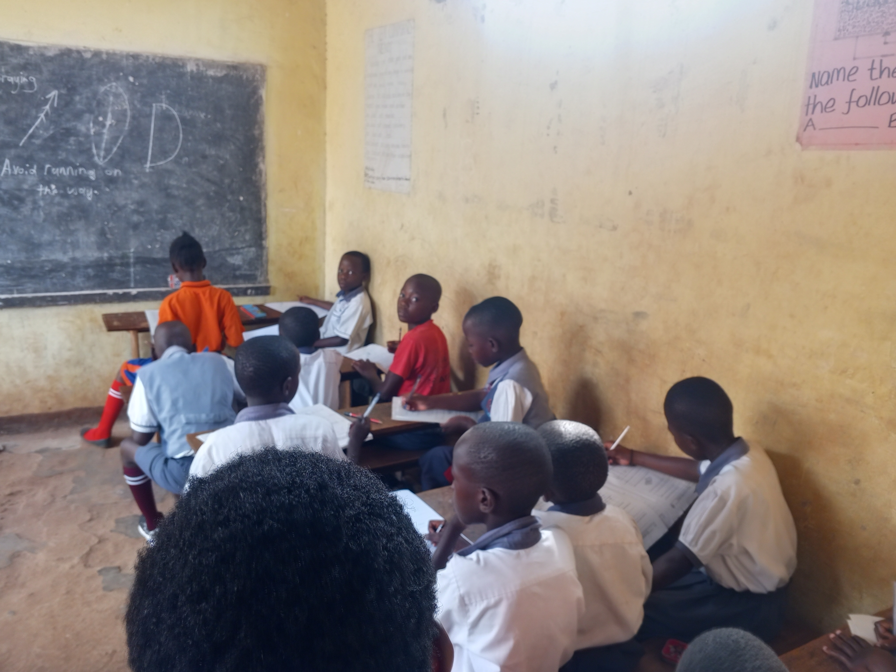
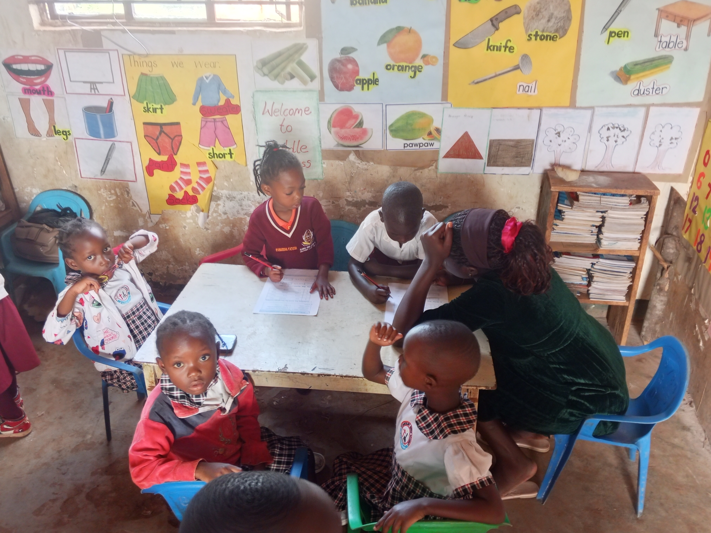

These classroom photos offer a glimpse of everyday learning at St. Marcellino Junior Academy, from pupils following a lesson to younger children taking part in guided activities.
Learning grows through practice, curiosity, and support. Our classrooms bring pupils together to listen, ask questions, and work through activities at different stages of their school journey.
Scenes from the classroom



